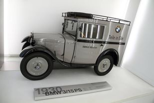
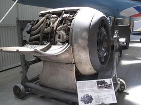

Compania a fost înființată în 1916 și își are sediul în München, Bavaria. BMW produce autovehicule în Germania, Brazilia, China, India, Africa de Sud, Marea Britanie și Statele Unite. În 2015, BMW a fost al 12-lea cel mai mare producător mondial de autovehicule, cu 2.279.503 de vehicule produse. Membrii familiei Quandt sunt acționari pe termen lung ai companiei, restul de acțiuni fiind deținute de publicul de tip float.


Originile BMW pot fi urmărite în trei companii germane separate: Rapp Motorenwerke, Bayerische Flugzeugwerke și Automobilwerk Eisenach. Istoria numelui însuși începe cu Rapp Motorenwerke , producător de motoare de aeronave. În aprilie 1917, după plecarea fondatorului Karl Friedrich Rapp , compania a fost redenumită Bayerische Motoren Werke (BMW). Primul produs al BMW a fost motorul de avion BMW IIIa . Motorul IIIa era cunoscut pentru o economie de combustibil și o performanță de înaltă altitudine. Comenzile rezultate pentru motoarele IIIa de la armata germană au provocat o expansiune rapidă pentru BMW.